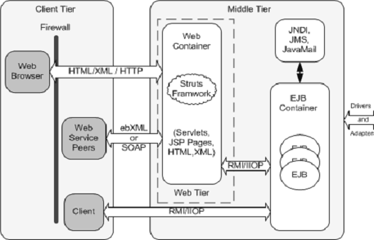
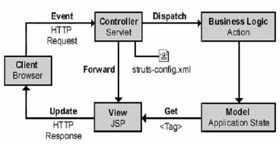
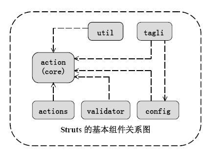

Struts 有一组相互协作的类、Serlvet 以及Jsp TagLib 组成。基于Struts 构架的web应用程序基本上符合JSP Model2 的设计标准，可以说是MVC 设计模式的一种变化类型。根据上面对framework 的描述，我们很容易理解为什么说Struts 是一个web framwork，而不仅仅是一些标记库的组合。但Struts 也包含了丰富的标记库和独立于该框架工作的实用程序类。
Struts 有其自己的控制器（Controller），同时整合了其他的一些技术去实现模型层（Model）和视图层（View）。在模型层，Struts 可以很容易的与数据访问技术相结合，包括EJB,JDBC 和Object Relation Bridge。在视图层，Struts 能够与JSP, Velocity Templates,XSL 等等这些表示层组件想结合。
下图是struts和web app间的关系图

Struts 与WebApp 的关系图2
既然struts 叫做web framework，那么其肯定主要基于web 层的应用系统开发。按照J2EE Architecture 的标准，struts 应当和jsp/servlet 一样，存在于web container 一层。
我们说struts framework 是MVC 模式的体现，下面我们就从分别从模型、视图、控制来看看struts 的体系结构（Architecture）。下图显示了struts framework 的体系结构响应客户请求时候，各个部分工作的原理。其原理图如下图3：

图3
首先，Struts 提供了Java 类org. apache.struts.action.ActionForm，Java 开发者将该类细分来创建表单bean。在运行时，该bean 有两种用法：
― 当JSP 准备相关的HTML，表单以进行显示时，JSP 将访问该bean(它保存要放入表单中的值)。那些值是从业务逻辑或者是从先前的用户输入来提供的。
首先，当从Web 浏览器中返回用户输入时，该bean 将验证并保存该输入以供业务逻辑或(如果验证失败的话)后续重新显示使用。
其次，Struts 提供了许多定制JSP 标记，它们的使用简单，但是它们在隐藏信息方面功能强大。例如，除了bean 名称和给定bean 中每个段的名称之外，页面设计者不需要知道有关表单bean 的更多信息。
Struts 虽然不直接有助于模型开发。在Struts 中，系统模型的状态主要由ActiomForm
Bean 和值对象体现。
在Struts framework 中， Controller 主要是ActionServlet，但是对于业务逻辑的操作则主要由Action、ActionMapping、ActionForward 这几个组件协调完成（也许这几个组件，应该划分到模型中的业务逻辑一块）。其中，Action 扮演了真正的控制逻辑的实现者，而ActionMapping 和ActionForward 则指定了不同业务逻辑或流程的运行方向。
整个struts 大约有15 包，近200 个类所组成，而且数量还在不断的扩展。在此我们不能一一介绍，只能列举几个主要的简要的介绍一下。下表说明了目前struts api 中基本的几个组件包，包括action,actions,config,util,taglib,validator。下表则显现了这几个组件包之间的关系。其中action 是整个struts framework 的核心
org.apache.struts.actionorg.apache.struts.actions
这个包是主要作用是提供客户的http 请求和业务逻辑处理之间的特定适配器转换功能，而1.0 版本中的部分动态增删FromBean 的类，也在struts1.1 中被Action 包的DynaActionForm组件所取代
org.apache.struts.config
提供对配置文件struts-config.xml 元素的映射。这也是sturts1.1 中新增的功能
org.apache.struts.util
Strtuts 为了更好支持web application 的应用，体统了一个些常用服务的支持。
org.apache.struts.taglib
这不是一个包，而是是一个客户标签类的集合。下面包括Bean Tags，HTML Tags，Logic Tags，Nested Tags，Template Tags 这几个用于构建用户界面的标签类。
org.apache.struts.validator
Struts1.1 framework 中增加了validator framework，用于动态的配置from 表单的验证。
